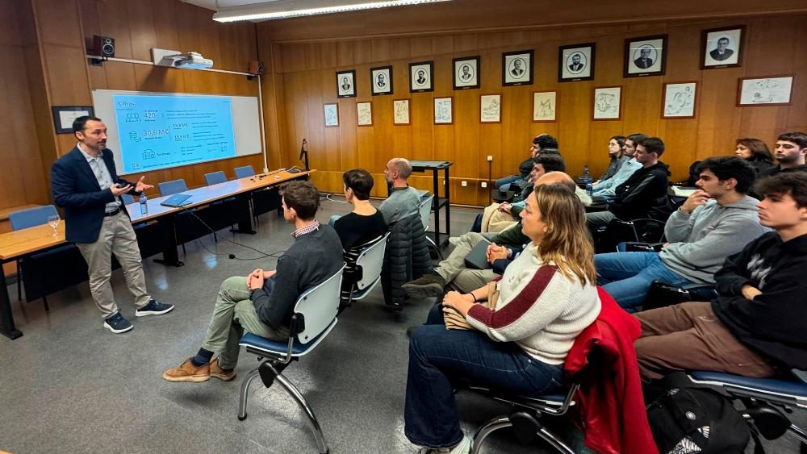

En el acto, presentaron la Convocatoria de Proyectos I+D+i 2025 financiados por la Cátedra Ikerlan, así como las posibilidades que ofrece Ikerlan a los estudiantes de la EPI de Gijón para realizar sus trabajos de fin de estudios, tesis o prácticas.

Responsables del Centro Tecnológico Ikerlan del País Vasco visitaron el Campus de Gijón de la Universidad de Oviedo para inaugurar la sede de la Cátedra Ikerlan de Investigación y Desarrollo, situada en la primera planta del Edificio Departamental 7 de la EPI.
Durante la jornada, se desarrollaron varias reuniones con profesorado y estudiantado interesado en colaborar en las líneas de especialización de Ikerlan. Además, Marco González Hierro, responsable área IA y Datos de Ikerlan impartió una conferencia titulada Impacto de la Inteligencia Artificial en Nuevos Desarrollos Tecnológicos Demandados por la Industria. En esta conferencia se expusieron numerosos ejemplos industriales sobre el impacto de la Inteligencia Artificial en los nuevos desarrollos tecnológicos que actualmente las empresas demandan en ámbitos como: las tecnologías digitales, los sistemas electrónicos y la ciberseguridad y la energía y la mecatrónica.

Una vez finalizada la conferencia, Unai Viscarret Álvarez, director de personas de Ikerlan; María Jesús Lamela Rey, directora de la Cátedra Ikerlan de la Universidad de Oviedo y Santiago Fernández López, director de la Fundación Universidad de Oviedo, presentaron la Convocatoria de Proyectos I+D+i 2025 financiados por la Cátedra Ikerlan, así como las posibilidades que ofrece la compañía a los estudiantes de la EPI de Gijón para realizar sus trabajos de fin de estudios (grado y máster), doctorado o prácticas.
Para finalizar la jornada, tuvo lugar la inauguración de la sede de la Cátedra Ikerlan de Investigación y Desarrollo ubicada en el Departamento de Construcción e Ingeniería de Fabricación del Campus de Gijón, que contó con la presencia de la vicerrectora de Transferencia y Relaciones con la Empresa, Susana Luque Rodríguez, y de la directora de área de Cátedras de Empresa e Institucionales, Verónica Cañal Fernández.